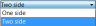

Contents
Description
L'éditeur de propriétés est l'un des outils les plus importants de FreeCAD et un élément essentiel pour travailler dans FreeCAD. L'éditeur de propriétés permet de gérer les propriétés des objets dans votre document.
Généralement, l'éditeur de propriétés est destiné à traiter un seul élément à la fois. Les valeurs indiquées dans l'éditeur de propriété appartient à l'objet actif du document actif (assurez vous de ce qui est actif si vous travaillez sur plusieurs documents). S'il n'y a pas d'élément sélectionné ou si il n'y a aucun document, l'éditeur de propriétés n'affiche pas de propriété ou de paramètre.
Toutes le propriétés indiquées sont modifiables à tout moment. Parfois, les propriétés sont indiquées mais non modifiables.
Les propriétés d'un objet sont rassemblés dans les propriétés Vue et les propriétés Données et montrées sous les différents onglets.
Différents objets peuvent avoir des propriétés différentes. Cependant, certaines propriétés sont communes parmi tous les objets, par exemple, la position et la rotation d'un objet sont des propriétés Données qui peuvent être manipulées.
Propriété définition
Une propriété est une pièce d'information comme un nombre ou une chaîne de texte, qui est rattachée à un document FreeCAD ou un objet dans un document. Les propriétés peuvent être affichées et - si c'est permis - modifiées avec l'éditeur de propriétés.
Les propriétés jouent un rôle important dans FreeCAD, puisqu'il est conçu dès le départ pour travailler avec des objets paramétriques, qui sont des objets définis seulement par leurs propriétés.
Les objets scriptés personnalisés dans FreeCAD peuvent avoir des propriétés des types suivants :
Boolean Float FloatList FloatConstraint Angle Distance Integer IntegerConstraint Percent Enumeration IntegerList String StringList Link LinkList Matrix Vector VectorList Placement PlacementLink Color ColorList Material Path File FileIncluded PartShape FilletContour Circle
Fonction
L'éditeur de propriété a deux "onglets" pour ses deux fonctions principales : l'onglet "Vue" permet d'accéder à toutes les propriétés concernant l'affichage (Visuel) de l'objet actif. L'onglet "Données" vous permet de modifier tous les paramètres de base de l'objet (Physique).
Dans un premier temps, vous trouverez ici le positionnement d'un objet. Ceci est habituellement découpé en deux groupes principaux :
- Il y a trois valeurs pour les trois dimensions positionnant l'objet.
- À l'autre de main sont quatre paramètres pour une rotation possible de l'élément : les trois axes x, y et z (exploitable comme vecteur pour l'axe de rotation) et un angle de rotation sur le vecteur donné.
En outre il peut y avoir des paramètres géométriques comme la longueur ou le diamètre.
Propriétés
Vue combinée → Projet → Vue
{kind=link}
Base
- VUEBounding Box : Permet de visualiser l'occupation, et, les dimensions hors tout, de l'objet dans l'espace. Valeur FALSE, ou TRUE (Défaut, FALSE).
- VUEControl Points : Valeur FALSE, ou TRUE (Défaut, FALSE).
- VUEDeviation :
- VUEDisplay Mode : Mode d'affichage de la forme, Flat lines, Shaded, Wireframe, Points
 . (Défaut, Wireframe).
. (Défaut, Wireframe). - VUEDraw Style : Type de ligne, Solid, Dashed, Dotted, Dashdot
 . (Défaut, Solid).
. (Défaut, Solid).
- VUEEnd Arrow : Montre le symbole d'une flèche au dernier point du fil, donc, il peut être utilisé comme une flèche d'annotation. Valeur FALSE, ou TRUE (Défaut, TRUE). (Le modèle de flèche, est modifiable, à partir de Edition → Préférences → Draft, tout comme la flèche des cotations).
- VUELighting : Éclairage One side, Two side . (Défaut, Two side).
{kind=link}
- VUELine Color : Donne la couleur de la ligne (bords) (Défaut, 0, 0, 0).
- VUELine Width : Donne l'épaisseur de la ligne (bords) (Défaut, 1).
- VUEPoint Color : Donne la couleur des points (extrémités de la forme) (Défaut, 0, 0, 0).
- VUEPoint Size : Donne la dimension des points (Défaut, 2).
- VUESelectable : Autorise la sélection de la forme. Valeur FALSE, ou TRUE (Défaut, TRUE).
- VUEShape Color : Donne la couleur de la forme (Défaut, 204, 204, 204).
- VUETransparency : Règle le degrés de transparence de la forme, de 0 à 100 (Défaut, 0).
- VUEVisibility : Détermine la visibilité de la forme (comme la barre ESPACE). Valeur FALSE, ou TRUE (Défaut, TRUE).
Grid
- VUEGrid Size : Modifie la dimension de la grille, (Défaut, 10 mm).
- VUEGrid Snap : Permet l'accrochage sur la grille. Valeur FALSE, ou TRUE (Défaut, FALSE).
{kind=link}
- VUEShow Grid : Permet d'afficher, ou non la grille. Valeur FALSE, ou TRUE (Défaut, FALSE).
- VUETight Grid : Affiche une grille serrée ou non. Valeur FALSE, ou TRUE (Défaut, TRUE).
Vue combinée → Projet → Données
{kind=link}
2D
Base
DONNÉESClosed : Détermine si le Wire est ouvert ou fermé. Valeur FALSE, ou TRUE (Défaut, FALSE).
DONNÉESEnd : [10,00 0,00 0,00], récapitulatif des coordonnées de la fin de la ligne (dernier point)
DONNÉESFillet Radius : Donne une courbe aux angles du Wire (Défaut, 0 mm).
DONNÉESLabel : Nom de l'objet, modifiable à volonté.
DONNÉESPlacement : [(0,00 0,00 1,00);0,00;(0,00 0,00 0,00)], donne l'ensemble des données Axis, Angle, et, Position ci dessous. Si vous sélectionnez, le titre Placement, un bouton avec trois petits points s'affiche  , en cliquant sur ce bouton ... , vous avez accès à la fenêtre d'options Tâche Placement.
, en cliquant sur ce bouton ... , vous avez accès à la fenêtre d'options Tâche Placement.
- DONNÉESAngle : Angle de rotation par rapport aux coordonnées X, Y, Z
- DONNÉESAxis : Sélection de l'axe(s) de rotation de travail X, Y, ou Z. Par exemple : nous déterminons un angle de 15°, nous spécifions une valeur de 1,0 pour x et 2,0 pour y, cette configuration, aura pour effet, une rotation finale de la pièce qui sera de, " 15° dans l'axe x " et " 30° dans l'axe y ". (Défaut, Z = 1 = actif)
- DONNÉESPosition : Déplacement des coordonnées X, Y, Z, par rapport aux points d'origine 0, 0, 0.
DONNÉESStart : [0,00 0,00 0,00], récapitulatif des coordonnées du début de la ligne (premier point)
.